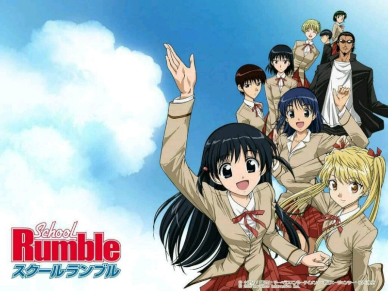

校园迷糊大王

交配类型：BG
《校园迷糊大王》（日语：スクールランブル，英语：School Rumble）是小林尽的一部轻松校园喜剧漫画，从一群高中生互相之间的各种爱慕纠葛入手，展开了一部幽默而积极向上的青春故事。
本作为讲谈社周刊少年Magazine的连载漫画，由2002年10月至2008年正式完结。也于2004年开始移植出动画、游戏等众多衍生物。
漫画版在香港和台湾中文版由东立代理，在大陆于2006年4-5月开始由点击动漫网和讲谈社展开战略合作，引进大量讲谈社授权漫画电子版，SR亦于同期在《周刊少年Magazine》电子版开始连载，后疑因大陆网民阅读漫画主要通过网络流传各种民间爱好者制作的翻译版，正版盈利甚微，不到一年便结束发行。
正式的简体中文版在新加坡由创艺出版社发行。
剧情简介
冢本天满是高中二年级学生。和许多的女孩子一样，她也在恋爱。但是，她一直没能向她非常喜欢的人——同班同学的乌丸大路表白爱意。
天不佑人，天满突然知道乌丸还有1年就要转校了这件事！尽管如此，她还是得到了妹妹八云和友人们的协助。为了告白她一会儿化装成护士，一会儿试着发出箭书等等干了一系列无厘头的事情。另一个主人公是一个无可救药的喜欢上这样的天满的高中二年级学生播磨拳儿。他是个不良少年，虽然也是那么的喜欢天满，但是和天满一样，无法向喜欢的人传达自己的爱意，过着消沉的每一天。当播磨在偶然目击到天满和乌丸一起吃午饭后，伤心欲绝的他变得从此拒绝去上学，开始了流浪的旅行。
几个为爱情所困的高中二年级学生，为了实现心中对爱情的美好愿望而不懈地努力。然而，这两人绞尽脑汁，使出一切他们所能想到的办法，连累了许多无辜群众，逼得身边诸友都看不过去而纷纷插手帮忙……可惜这两人一直没能够在一起。
推荐理由
暂无